Haskell Quiz No.16
難易度: λλ
以下のような二分木の定義があります。
以下の操作を定義してみましょう！
(1) 部分木を左右反転させた木を返す関数
→ 
左の木に mirror 関数を適用すると、右の木を返します。
(2) 木の高さを計算する関数
depth 関数で上記の木の高さを計算すると 3 になります。
(3) 木が平衡かチェックする関数
- 平衡の定義: 左右の部分木の高さが高々1しか違わない
上記の木は 平衡 です。
さらに Functor と Foldable のインスタンスを定義してみましょう！(ここでは fmap と foldMap を定義することにします。)
instance Functor a where
fmap :: (a -> b) -> Tree a -> Tree b
fmap = undefined
instance Foldable a where
foldMap :: Monoid m => (a -> m) -> Tree a -> m
foldMap = undefined答えは次回。
※ 図の作成には mermaidというツールを使っています。
参考
- Programming in Haskell (14.2 Foldables and friends)
- 関数プログラミング入門 Haskell で学ぶ原理と技法 (8.3.2 木による表現)
- CIS 623
はじめに
前回の問題と答えは以下の通りです。
問題
難易度: λ
葉にだけ値を持つような二分木を定義してみてください！
図で書くとこんな感じです。

こたえ
解説
この定義を使って図の木を作るとこんな感じになります。
t :: Tree Int
t = Node t1 t3
where
t1 = Node (Leaf 1) t2
t2 = Node (Leaf 2) (Leaf 3)
t3 = Node (Leaf 4) (Leaf 5)where を使わない場合はこんな感じです。
intTree :: Tree Int
intTree =
Node
(Node
(Leaf 1)
(Node
(Leaf 2)
(Leaf 3)))
(Node
(Leaf 4)
(Leaf 5))以上です。